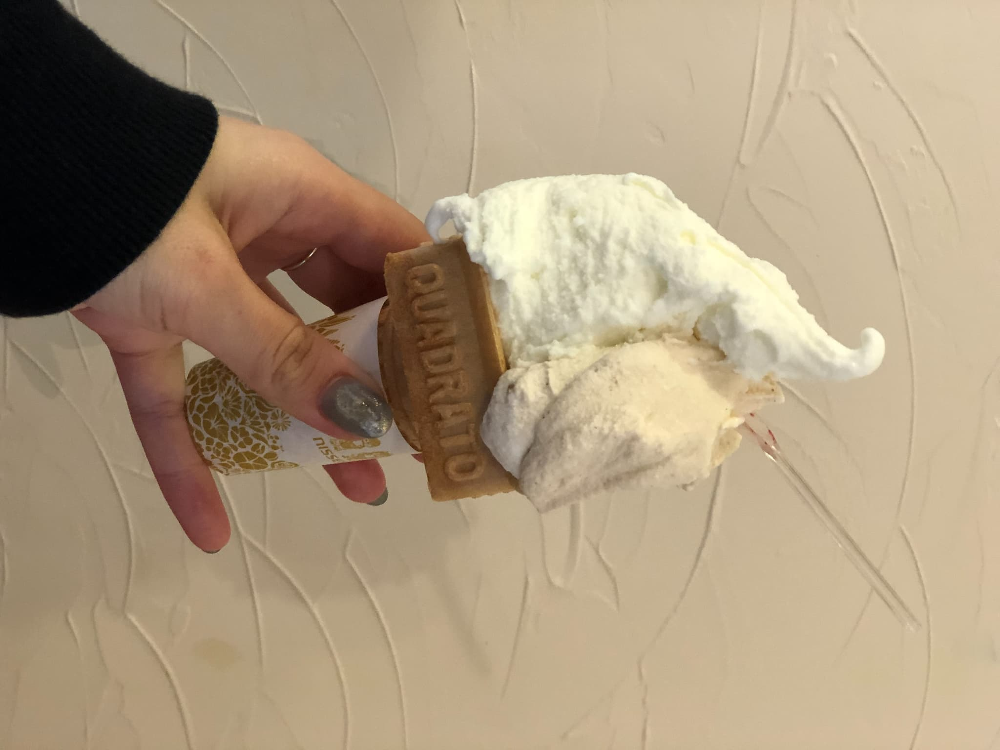

長野の名所 — 安曇野・白馬・上高地
安曇野（Azumino）
夜空が美しく利便性と自然の調和が取れた場所で、移住者が多いです。ホームページのお昼のヘッダーは安曇野の風景を使っています。おしゃれなカフェもありますよ。
基本情報
| 住所 | 長野県安曇野市 |
|---|---|
| アクセス | JR大糸線ほか |
| 営業時間 | 常時（施設により異なる） |
| 定休日 | 施設により異なる |

森の中の静かなカフェ。

カフェ名物のオムレツ
白馬（Hakuba）
たくさんのスキー場があり、冬はスノーボードやスキーを楽しむ人で賑わいます。夏はハイキングや自然散策も人気です。最近は外国人が多くインバウンド価格なのでそこは注意してくださいね。
基本情報
| 住所 | 長野県北安曇郡白馬村 |
|---|---|
| アクセス | JR白馬駅／バス |
| 営業時間 | 季節による（スキー場は冬期中心） |
| 定休日 | 施設による |

別荘地にひっそりとたたずむジェラート屋。
上高地（Kamikochi）

夏は自然の豊かさを感じられる緑があふれ、秋には山々が赤く染まり北アルプスの上には雪が積もる幻想的な空間を味わえます。ウォーキングコースがあり自然に触れながら運動もできます。最近は観光客が多くオーバ－ツーリズムが問題になっています。
基本情報
| 住所 | 長野県松本市安曇 |
|---|---|
| アクセス | 松本からバス／シャトル |
| 営業時間 | シーズンにより通行規制あり（大抵は春〜秋） |
| 定休日 | 冬期閉鎖（道路規制あり） |